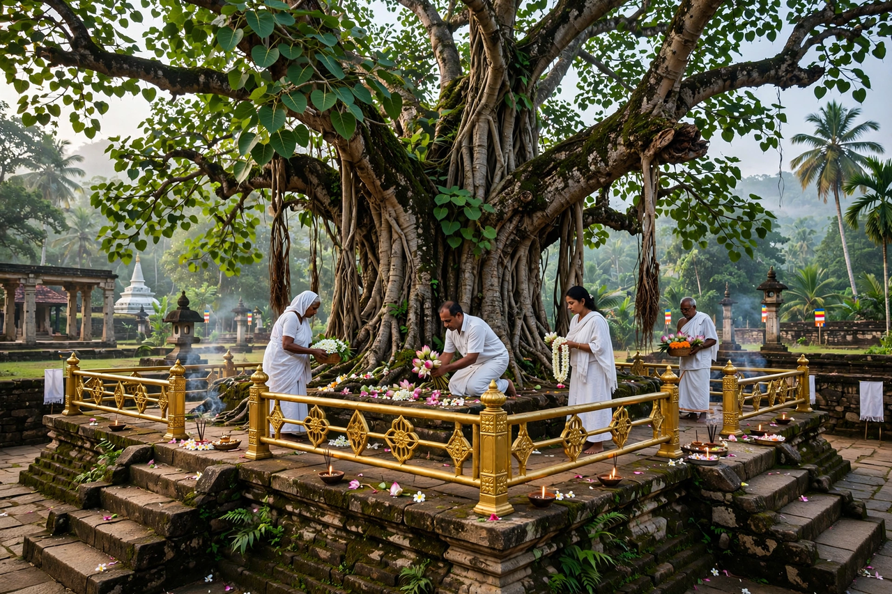

| Jaya Sri Maha Bodhi | |
|---|---|
 The sacred Bodhi tree at Anuradhapura | |
| Location | Mahamewuna Gardens, Anuradhapura, Sri Lanka |
| Planted | 288 BCE |
| Species | Ficus religiosa |
| Brought by | Sanghamitta Theri |
The Jaya Sri Maha Bodhi is a sacred fig tree (Ficus religiosa) in the Mahamewuna Gardens at Anuradhapura, Sri Lanka. It is said to be grown from the southern branch of the original Bodhi tree at Bodh Gaya, India, under which the Buddha attained enlightenment, and to have been planted in 288 BCE. It is the oldest living human-planted tree in the world with a known planting date, and one of the most sacred relics of Buddhism.
According to the Sri Lankan chronicles, the sapling was brought to the island by the nun Sanghamitta, daughter of the Mauryan emperor Ashoka, and planted by King Devanampiya Tissa at Anuradhapura. The tree has been tended continuously for over 2,300 years by an unbroken line of guardians, surviving invasions, storms and the shifting of capitals that left the surrounding city in ruins.
The tree stands on a high terraced platform within the sacred precinct, surrounded by protective railings, a golden fence (ran weta), and smaller descendant trees. Pilgrims offer flowers, lamps and coins at the site daily. Water from the tree's maintenance is treated as sacred, and its leaves are treasured by devotees.
For Sri Lankan Buddhists the Jaya Sri Maha Bodhi is a living link to the Buddha himself. Saplings from it have been planted at Buddhist temples throughout Sri Lanka and abroad. The site forms part of the UNESCO World Heritage listing of the Sacred City of Anuradhapura.